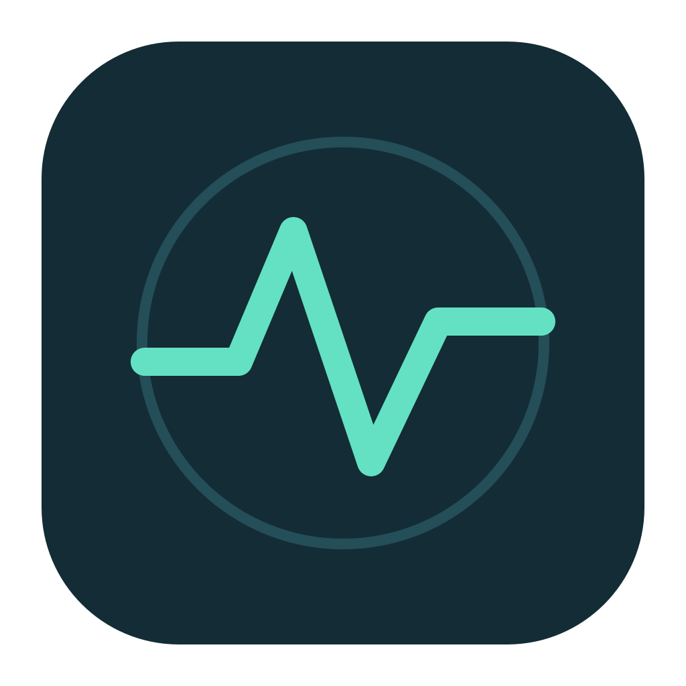

See every core
at work.
Follow CPU usage in real time, explore individual cores, and find the processes doing the heavy lifting.

lumen.DownloadA quieter way to see what’s going on. Lumen brings your Mac’s vital signs to the menu bar, so you can stay focused on everything else.
ILLUSTRATIVE PREVIEW · READINGS WILL VARY
See the numbers that matter, then take a closer look whenever you need to. It’s your Mac, in a little more detail.
Follow CPU usage in real time, explore individual cores, and find the processes doing the heavy lifting.
See usage, memory pressure, swap and the apps using the most memory—all in one place.
Watch upload and download speeds, see a rolling history, and choose which interface to monitor.
Check available space and mounted volumes at a glance.
View charge, power status and available health information.
See macOS thermal condition and, on supported Apple Silicon Macs, a best-effort chip sensor reading.
Lumen is native, open source and made to work offline. No accounts, subscriptions, analytics or licence checks. Just useful information, right where you need it.
Explore the source ↗Free to use, simple to set up, and yours to explore.
Get the universal app for macOS 14 or later, on Apple Silicon or Intel.
Unzip it and open Lumen. Find the waveform icon in your menu bar.
Click the icon, open Settings, and choose the metrics you want to see.
The current build is locally signed and is not notarized by Apple. macOS may block it on first launch. If you trust the download, review Apple’s instructions for opening an app that has not been notarized. Temperature readings use an undocumented interface and may not be available on every Mac.
All the essentials, always within reach.